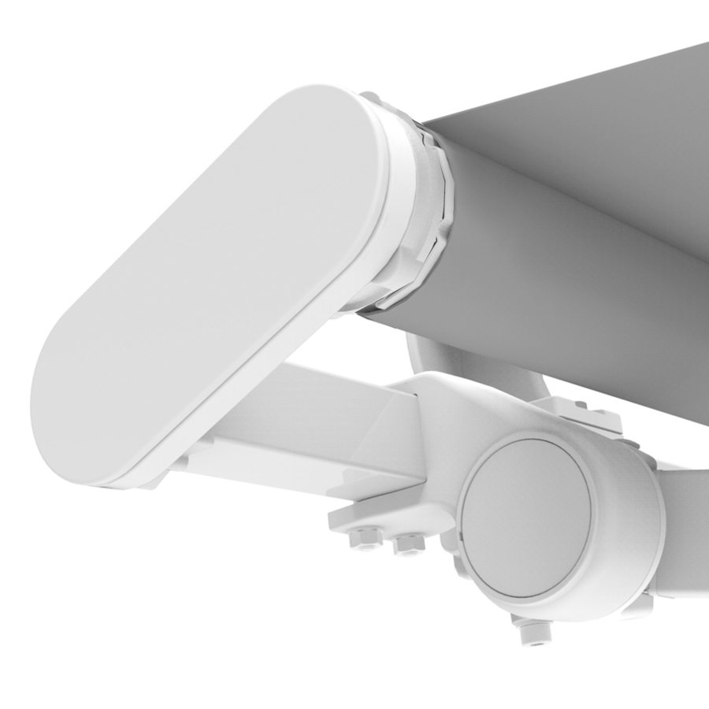
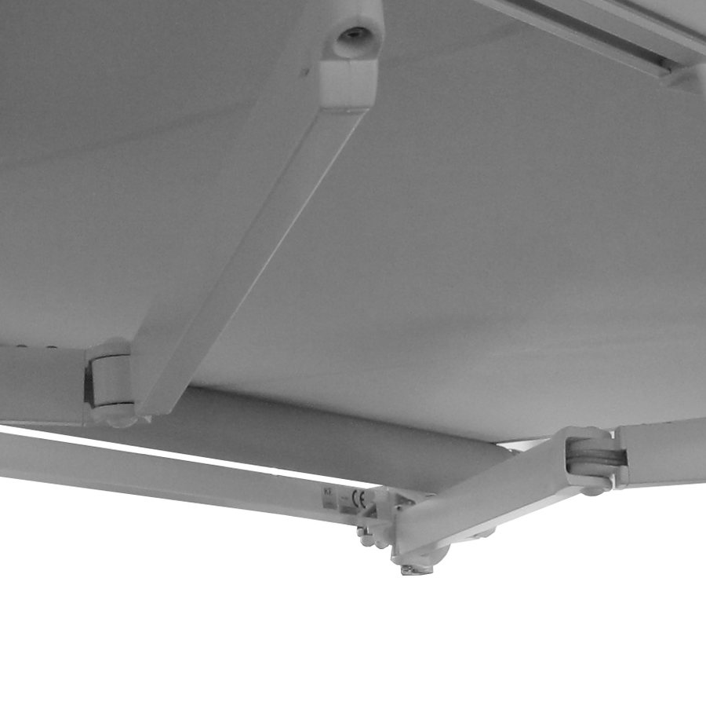
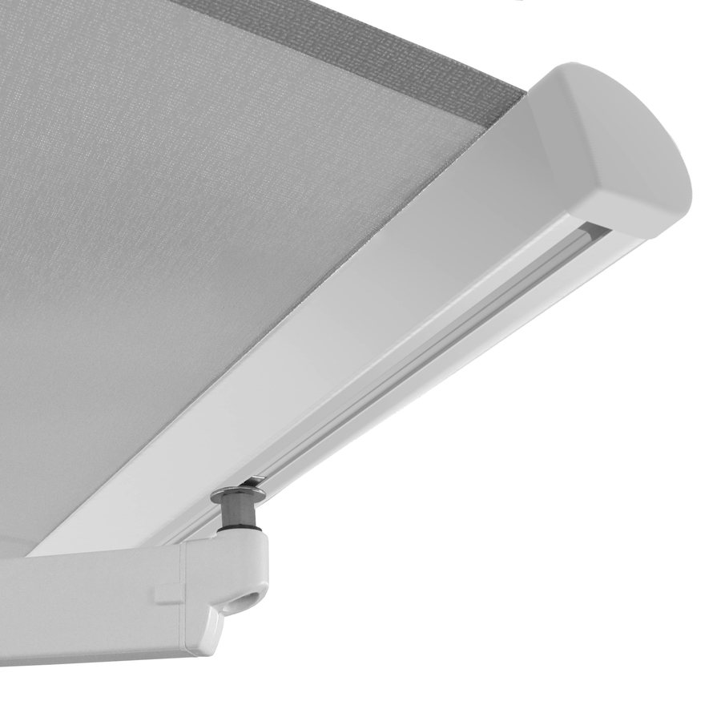

الرئيسية/ستائر خارجية/ستارة Mini Helix BQ
حسب المقاسأذرع قابلة للطي
ستارة Mini Helix BQ
حتى 6 × 3.10 م
ستارة مدمجة بأذرع قابلة للطي على قضيب مربع 40 مم من الفولاذ المجلفن والمطلي، بأذرع Lite وضبط مستمر للميل. بفضل تصميمها المعياري، يصل عرضها إلى 10 م بنفس البروز.





- النوع
- ستارة بأذرع قابلة للطي
- أقصى عرض
- 6 م، وحتى 10 م في النسخة المعيارية
- أقصى بروز
- 3.10 م
- الأذرع
- أذرع Lite، من 1.60 م إلى 3.10 م
- القضيب
- فولاذ مجلفن ومطلي، 40 × 40 مم
| البروز | أدنى عرض |
|---|---|
| 1.60 م | 1.97 م |
| 1.85 م | 2.22 م |
| 2.10 م | 2.47 م |
| 2.35 م | 2.71 م |
| 2.60 م | 2.97 م |
| 2.85 م | 3.22 م |
| 3.10 م | 3.47 م |
أدنى عرض للستارة الجاهزة حسب البروز. تُصنع الستارة حسب المقاس بين هذا العرض وأقصى عرض.
- التركيب
- على الجدار أو السقف، مع غطاء حماية، تحت السقف
- الخيارات
- غطاء حماية، تشغيل بمحرك
- القماش
- اختيار واسع من الأقمشة والألوان
نتكفل بالتركيب لبعض الطلبيات حسب المنتج وقيمة الطلبية. اتصلوا بنا لمعرفة المزيد.